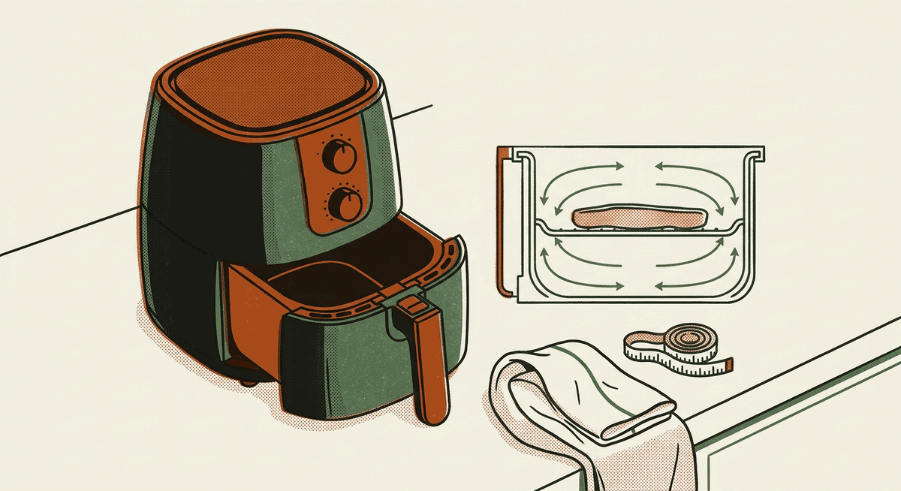

capacity · 20 November 2026
A no-hype checklist for comparing air fryer capacity
Litres, quart counts and 'feeds a family of' claims measure different things. Here is how to read each one without being sold something.
4 min·method, not measurement
Issue 01 · 20 November 2026 · Autumn/winter 2026
As an Amazon Associate I earn from qualifying purchases. Every link to a store on this site is a paid link: if you buy after clicking it we may earn a commission, at no cost to you. We show no prices, ratings or review text, because we cannot verify a single product yet — what that means in practice. Disclosure
Front page · Question-shaped guides, sourced claims only, and a visible note whenever a link can earn us a commission.
Two shapes, two failure modes. The trade-offs that decide it are on the listing, if you know which fields to read.

5 links were supplied for marketing. All five are in the same state: the identifier measures 9 characters, no tracking tag is present in the address, and none of the four product fields (title, listing, price, rating) could be confirmed from an official source.
B04G1MEwY9 chars · unresolvedB02NbDxp39 chars · unresolvedB00hJ57DV9 chars · unresolvedB0c8moW599 chars · unresolvedB0f3GKalj9 chars · unresolved5 of 5 rows are blocked on three questions the account owner can answer in about fifteen minutes — Q-01, Q-02, Q-03. When they are answered, the titles below fill themselves and the guides gain a product link beside a “(paid link)” label.
capacity · 20 November 2026
Litres, quart counts and 'feeds a family of' claims measure different things. Here is how to read each one without being sold something.
4 min·method, not measurement
cleanup · 20 November 2026
The appliance you keep using is the one that is easy to wash and easy to park. Both are checkable before you buy, from documents you can open in a minute.
5 min·method, not measurement
multi-function · 20 November 2026
Nine cooking modes is a spec sheet, not a reason. Six questions that separate a replacement from a duplicate - and save you the counter space anyway.
5 min·method, not measurement
reading-a-listing · 20 November 2026
The fields that can be verified, the ones that are decoration, and the two lines that tell you a listing was written by someone who used the thing.
4 min·method, not measurement
Each idea lists its real options, a recommendation, and the instruction to hand a build session. Nothing is implemented until a row is accepted.
| Ref | Suggestion | Impact | Decision |
|---|---|---|---|
SG-01 | Get five real listing URLs before marketing anything | blocking | pending review |
SG-02 | Replace every outbound href with the tagged Special Link we generate | high | pending review |
SG-03 | Pick the marketplace the reader actually buys on | high | pending review |
SG-04 | Turn each product row into a decision card, not a verdict | high | pending review |
SG-05 | Handle price and commission the only two legal ways | high | pending review |